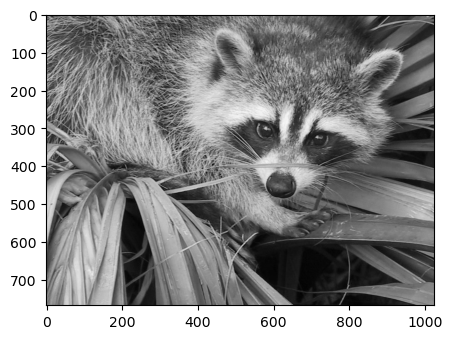
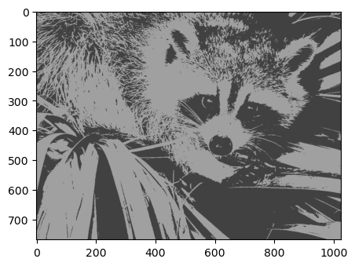

# Code source: Gaël Varoquaux
# Modified for documentation by Jaques Grobler
# License: BSD 3 clause
import numpy as np
import scipy as sp
import matplotlib.pyplot as plt
import matplotlib.image as img
from sklearn import cluster
try: # SciPy >= 0.16 have face in misc
from scipy.misc import face
face = face(gray=True)
except ImportError:
face = sp.face(gray=True)
path_fig_save = "/home/mrrobot/Documents/GitHub/Analisis_multivariado/5_descomposicion_datos_tecnicas/"
n_clusters = 4
np.random.seed(0)
X = face.reshape((-1, 1)) # We need an (n_sample, n_feature) array
k_means = cluster.KMeans(n_clusters=n_clusters, n_init=4)
k_means.fit(X)
values = k_means.cluster_centers_.squeeze()
labels = k_means.labels_
# create an array from labels and values
face_compressed = np.choose(labels, values)
face_compressed.shape = face.shape
vmin = face.min()
vmax = face.max()
# original face
plt.figure(1, figsize=(3, 2.2))
plt.imshow(face, cmap=plt.cm.gray, vmin=vmin, vmax=256)
plt.savefig(path_fig_save + "original.png", dpi=600)
# compressed face
plt.figure(2, figsize=(3, 2.2))
plt.imshow(face_compressed, cmap=plt.cm.gray, vmin=vmin, vmax=vmax)
plt.savefig(path_fig_save + "comprimida.png", dpi=600)
# # histogram
# plt.figure(4, figsize=(3, 2.2))
# plt.clf()
# plt.axes([0.01, 0.01, 0.98, 0.98])
# plt.hist(X, bins=256, color=".5", edgecolor=".5")
# plt.yticks(())
# plt.xticks(regular_values)
# values = np.sort(values)
# for center_1, center_2 in zip(values[:-1], values[1:]):
# plt.axvline(0.5 * (center_1 + center_2), color="b")
# for center_1, center_2 in zip(regular_values[:-1], regular_values[1:]):
# plt.axvline(0.5 * (center_1 + center_2), color="b", linestyle="--")
# plt.show()
